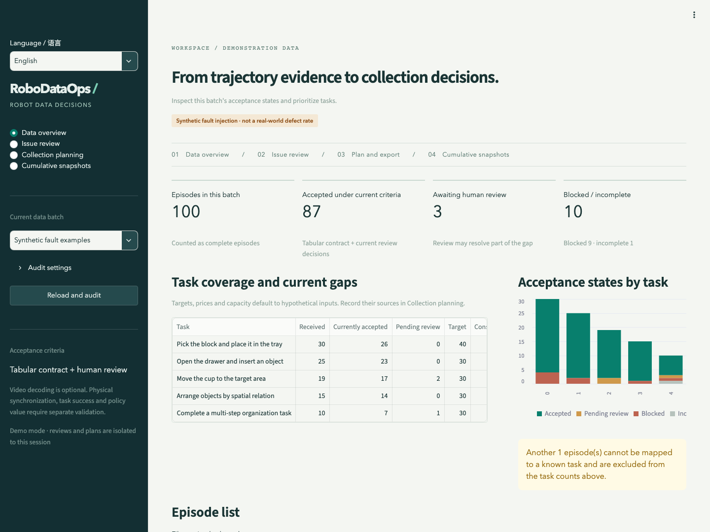
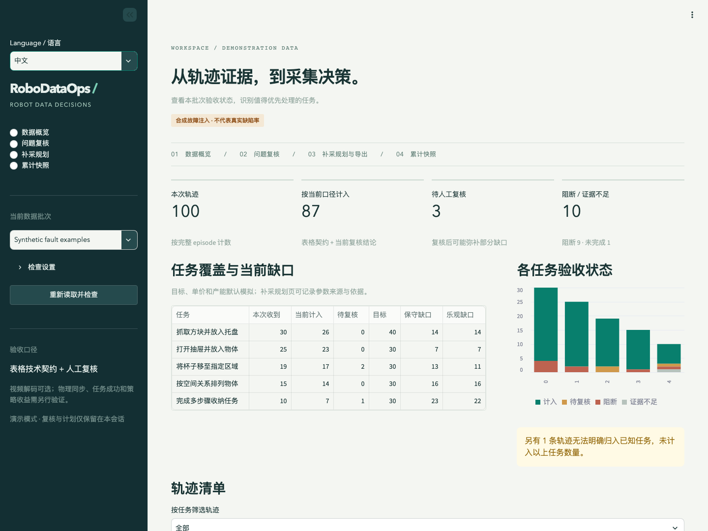

Data leads
Inspect coverage, unresolved risk, budget alternatives and delivery shortfalls.
RoboDataOps connects complete-episode evidence, human acceptance decisions, task coverage and limited collection budgets for robotics data leads, operators and ML engineers.
30 seconds: the problem · 2 minutes: a decision · 5–10 minutes: inspect the evidence

Teams need to decide which episodes count for a stated use, which tasks remain under-covered and where to spend the next collection budget. File counts, finding counts and accepted episode counts differ.
The product provides traceable acceptance and collection decisions. Reduced review effort, rework and policy improvements are hypotheses awaiting real user and operational studies.
Inspect coverage, unresolved risk, budget alternatives and delivery shortfalls.
Locate episode/frame evidence, record reasons and export versioned collection tasks.
Check platform, dimensions, FPS and action semantics before training.
The main walkthrough uses 100 explicitly synthetic fault episodes. Inspect NaN evidence, then dismiss the low-motion signal for EP 64 with a reason and recalculate coverage. A useful waiting action is not automatically discarded.
Compare equal-budget, benefit/cost greedy and integer optimization under identical inputs. Save immutable plans with provenance, rules, reviews and constraints. Reconcile incoming data without double credit, then create a cumulative snapshot with lineage and recompute total gaps.
A thin LeRobot v3 adapter reconstructs complete episodes and checks declared versus actual dtype, dimensions, indices and timing.
Individual/bulk confirmation, dismissal, deferral and reopening preserve append-only history. Video seeking moves action/state cursors.
Save/import/export scenarios; compare strategies; recalculate budget/capacity counterfactuals and explicit attempt-cost yield assumptions.
Require matching source/contracts, prevent duplicate credit, preserve lineage and carry reviews only for unchanged evidence.
Shared Parquet/MP4 shards are not episodes. Five LIBERO simulation clips retain original camera paths, metadata intervals, transformations and SHA256. Missing downloads, decoding errors and sampled checks remain distinct. Metadata-based playback is not physical synchronization certification.
ALOHA checks a second contract: 14 action channels at 50 FPS, compared with LIBERO's 7 at 10 FPS. Units, absolute/delta control and coordinate frames remain unknown without supporting evidence. Matching dimensions do not establish matching semantics.
Technical acceptance does not prove task success or training value. Targets, prices, priorities and capacity default to simulated inputs; actual estimates require rationale. Cumulative artifacts preserve original IDs for analysis and are not reindexed training splits.
Blocked, then incomplete mandatory checks, then unresolved review, otherwise accepted. Multiple findings never subtract the same episode twice.
State reductionSynthetic faults test software; public simulation samples test compatibility; hypothetical costs demonstrate decisions.
Design decisionsPython/PyArrow reads columnar data, DuckDB/SQL aggregates acceptance, SciPy/HiGHS solves integer allocation, Streamlit provides the local workbench and FFmpeg handles video. GitHub Pages hosts this bilingual static case study with precomputed teaching interactions; run the Python app locally, in Docker or Codespaces.
Minimize normalized weighted residual gaps L = Σ wᵢ(dᵢ−xᵢ)/dᵢ with integer 0≤xᵢ≤min(dᵢ,capᵢ) and Σcᵢxᵢ≤budget. Money uses integer cents. Independent checks verify feasibility and distinguish proven optimality, a feasible incumbent, timeout without a solution and infeasibility. The objective measures quantity coverage, not robot capability.
Complete episodes, evidence rules, explicit action contracts and verified clip provenance.
quality.pyReduce once per episode before task aggregation.
coverage.sqlInteger optimization, two baselines, counterfactuals and an independent exhaustive oracle.
planning.pyLocked dependencies, checksums, append-only audits, transactions, receipt concurrency protection, CLI and remote CI.
Regression counterexamplesUser jobs, acceptance boundaries, research protocols and release scope.
PRDReceipt checks had a cross-connection race. A process-level transaction lock and concurrency regression fixed it. A mismatched video interval also guards evidence generation. These are engineering review findings, not user interviews.
Observation, change, recheckOne hundred small controlled cases compare optimal objectives against an independent exhaustive oracle, with 300 feasibility checks across three strategies. Ties are retained. Synthetic quality uses fixed controlled regressions with legitimate static negatives; an independently frozen test set is not yet established; injection recovery is not real-world accuracy.
Pinned public samples comprise 100 LIBERO episodes / 16,048 frames / five tasks and five ALOHA compatibility episodes. A separate 20-episode held-out public pool simulates incoming delivery. Five clips cover listed first-camera intervals only. Technical checks do not create a human quality gold standard.
Not yet conducted: 3–5-person user comparisons, 30–50 independently annotated episodes, robot training/rollouts or a real collection-cost pilot. Empty study templates, descriptive-analysis CLI and protocols are provided. Empty templates cannot produce results.
Environment, dependencies, seeds, samples, oracle results and unperformed studies are recorded.
Validation reportDesktop, 390px mobile, synchronized video seeking and cumulative workflow checks.
Browser evidenceCounterbalance task order and record time/errors. Fix preprocessing, budgets and at least three training seeds; separate filtering from allocation ablations.
Protocols and blank templatesUse Python 3.12 and uv; install system FFmpeg for video. Curated offline analysis caches are included. First dependency installation needs network access. The workbench opens in English; use Language / 语言 in the sidebar to switch to Chinese. The CLI supports --lang en / --lang zh. Language changes preserve data, rules, reviews and budgets; raw data and audit JSON stay unchanged.
Try review, budget comparison, public clips and cumulative snapshots. With LIBERO and public_delivery, the simulation grows from 100 to 120 episodes, four per task. This is reserved public data, not newly captured delivery. GitHub Pages cannot run the Streamlit backend.
git clone https://github.com/laizhiyin/RoboDataOps.git
cd RoboDataOps
uv sync --frozen
ROBODATAOPS_DEMO_MODE=1 uv run streamlit run app.py
uv run robodataops audit --source data/public_sample --db :memory:
uv run robodataops plan --source data/demo --budget 800 --db :memory:
uv run python -m robodataops.validation
uv run pytest -q --cov=robodataops --cov-fail-under=80
uv run python script/build_portfolio.py --check
docker compose up --buildPinned revisions, selection, checksums and data licenses are recorded in each cache's NOTICE. fetch-libero and prepare_evidence.py reproduce acquisition; video downloads total about 80MB and are optional.
LIBERO attributionCLI and UI share domain logic. Persistent mode uses var/workbench.duckdb; demo mode isolates sessions. Multi-process serving, authorization and large jobs remain pilot-driven extensions.
ArchitectureThis is an AI-assisted project. New implementation covers workflows, the thin adapter, acceptance, evidence linkage, planning, cumulative lineage and validation tools. Open-source components supply the ecosystem, storage, solver and UI foundations. Using HiGHS is not inventing an optimization algorithm, and generated code alone does not prove independent coding ability.
The candidate should personally rehearse three changes: add a rule with a valid negative; change SQL and prove no double count; add a business constraint and explain the solver result. Describe personal decisions and hands-on contributions according to actual experience. No interview, internship or ownership percentage is fabricated.
Next priorities are real task feedback and independent labels, followed by small policy experiments. Add server databases, permissions, object storage, background jobs and supplier scheduling when a real pilot needs them.
Project code is MIT; datasets and third-party components retain their own licenses.
AttributionUser studies, actual costs, training value and commercial adoption have separate completion criteria.
Next validation stepsRoboDataOps 是面向具身数据负责人、采集团队与算法工程师的数据质检与补采决策工作台：把完整 episode 的证据、人工验收口径、任务缺口和有限预算连接起来。
30 秒看定位 · 2 分钟看决策 · 5–10 分钟核查实现

用户收到多任务示教数据后，需要回答：哪些轨迹按当前用途可计入？哪里仍有缺口？下一轮预算该投向哪里？文件数、异常数和实际可用 episode 数经常不是同一个数字。
产品提供可追溯的验收判断与补采清单，帮助减少重复核对、重复计功和没有依据的采购。工时节省、返工减少与策略收益是待验证的价值假设，尚无真人对照或企业试点结论。
看任务覆盖、未决风险、预算方案与到货差额，明确验收口径。
定位 episode、字段和帧区间，记录复核理由，按版本导出下一轮任务。
检查平台、维度、FPS 与动作语义边界，追踪训练前数据筛选依据。
主演示使用 100 条明确标记的合成故障轨迹：发现 NaN 等技术问题后，查看原始帧证据；对 EP 64 的低运动信号填写依据并驳回，重新计算当前覆盖。合法等待可能有价值，低运动本身不会直接删除数据。
在同一口径下比较等额预算、收益成本比贪心和整数优化，保存包含来源、规则、人工结论、目标与约束的不可变方案。到货验收排除原批次和已登记轨迹；累计页再生成有父版本血缘的新快照，回算全部任务缺口。
LeRobot v3 薄适配，按 metadata 找到完整轨迹，严格核对声明与实际 dtype、维度、索引和时间。
单项 / 批量确认、驳回、暂缓与恢复；追加历史。视频片段联动动作 / 状态游标。
情景保存 / 导入 / 导出、三种策略比较、预算与产能反事实、显式尝试成本下的成品率敏感性。
同源同契约验收、重复计功防护、累计分析快照、内容不变时继承复核；冲突拒绝静默合并。
共享 Parquet / MP4 分片不等于 episode。视频根据原 metadata 的相机和时间偏移定位；5 段 LIBERO 仿真片段保留来源路径、区间、转换与 SHA256。解码、黑帧和冻结检查有明确抽查范围；未下载、无法解码和未发现异常分别显示。metadata 游标联动不构成物理同步认证。
第二来源 ALOHA 验证 14 通道、50 FPS，与 LIBERO 的 7 维动作、10 FPS 区分。动作单位、绝对 / 增量控制和坐标系缺证据时保持 unknown；维度相同也不能推断语义一致。
按当前技术与复核口径计入，不表示任务成功、信息量充足或模型训练收益。默认目标、成本、权重和产能均为模拟情景，实际输入必须记录依据。累计产物是保留原始 ID 的分析快照，不是重编号的训练数据集。
技术栈：Python + PyArrow 读取列式数据，DuckDB / SQL 汇总验收状态，SciPy / HiGHS 求解整数分配，Streamlit 提供本地工作台，FFmpeg 提供视频解码与片段提取。静态双语案例页通过 GitHub Pages 发布；它提供预计算教学交互，完整 Python 工作台通过本地、Docker 或 Codespaces 运行。
补采模型最小化加权剩余缺口比例 L = Σ wᵢ(dᵢ−xᵢ)/dᵢ；整数 xᵢ 满足 0≤xᵢ≤min(dᵢ,capᵢ)，Σcᵢxᵢ≤预算。金额使用整数分；独立检查求解结果的预算、整数与容量约束，区分最优、可行未证最优、超时无解与不可行。该目标衡量数量覆盖，不直接最大化机器人能力。
完整 episode 读取、规则证据、显式动作契约与视频来源校验。
quality.py先按 episode 归约，再按任务聚合，避免多发现导致数量膨胀。
coverage.sql整数优化、两项基线、反事实与独立枚举 oracle。
planning.py固定依赖、文件校验、追加审计、事务写入、并发收货去重、CLI 与远端 CI。
关键回归反例用户任务、状态工作流、验收边界、可用性协议和完整版本规划。
产品需求文档收货去重曾存在跨连接竞态：增加进程内串行事务与并发反例。V1 视频时长规则也用不匹配区间回归，避免证据生成中断。这里是工程审查迭代，尚非真人用户反馈。
问题—修改—复测自动化测试覆盖真实软件行为；100 个小型受控情景用独立穷举核对最优目标，并对三项策略执行 300 次约束检查，保留贪心与优化打平的结果。合成质量测试使用固定受控回归并包含合法静止负例，尚无独立冻结测试集；不把注入缺陷命中率描述成真实行业准确率。
公开样本固定 revision：LIBERO 100 条 / 16,048 帧 / 5 任务，ALOHA 5 条兼容样本；另有每任务 4 条的 20 条公开保留池用于模拟回流。公开样本技术检查结果不构成人工质量金标准。5 段视频仅覆盖所列第一相机片段，其余相机与区间未做全量验收。
尚未开展：3–5 位相关用户对照、30–50 条独立人工标注、机器人训练与 rollout、真实采集成本试点。仓库提供空研究模板、描述性统计 CLI 和实验协议；空模板会被拒绝，绝不生成虚构研究成果。
环境要求 Python 3.12、uv；视频功能需要系统 FFmpeg。仓库自带已署名的离线分析缓存，默认流程无需下载全部机器人数据。首次安装 Python 依赖需要网络。软件默认英文，侧栏 Language / 语言 可切换中文；CLI 支持 --lang en / --lang zh。切换语言保留数据、规则、复核和预算状态，原始数据及审计 JSON 不改写。
运行工作台后，依次体验问题复核、预算比较、公开视频和累计快照。LIBERO 来源配合 public_delivery 演示累计：100 → 120 条，每任务新增 4 条；保留池是预先留出的公开仿真数据，不能当作实际新采。GitHub Pages 页面提供静态教学案例，不能运行 Streamlit 后端。
git clone https://github.com/laizhiyin/RoboDataOps.git
cd RoboDataOps
uv sync --frozen
ROBODATAOPS_DEMO_MODE=1 uv run streamlit run app.py
# 检查、规划、独立验证与测试
uv run robodataops audit --source data/public_sample --db :memory:
uv run robodataops plan --source data/demo --budget 800 --db :memory:
uv run python -m robodataops.validation
uv run pytest -q --cov=robodataops --cov-fail-under=80
# 构建与核对同一内容来源的网页 / README
uv run python script/build_portfolio.py
uv run python script/build_portfolio.py --check
# 容器运行（已内置 FFmpeg）
docker compose up --buildLIBERO / ALOHA 的固定版本、选择规则、文件 SHA256 和独立数据许可见各缓存目录 NOTICE。重新获取执行 fetch-libero 或 prepare_evidence.py；视频下载约 80MB，并非默认启动步骤。
LIBERO 来源与片段归属CLI 和界面共用领域实现。本地持久模式保存 var/workbench.duckdb；演示模式按会话隔离。多进程、权限管理和海量任务调度留待真实团队试点。
架构与运行边界这是 AI 辅助开发项目。项目新增实现覆盖用户流程、v3 薄适配、验收状态、证据连接、预算模型、累计血缘和验证工具；开源组件负责数据生态、存储、求解和界面基础。调用 HiGHS 不等于自行发明优化算法，使用 AI 生成代码也不等于已证明独立编码能力。
求职者应亲自完成三次可复现演练：增加规则及合法负例；修改 SQL 且证明不重计；增加业务约束并解释求解结果。个人主导、亲自修改与面试可解释范围应按实际经历补充，当前不虚构实习、用户访谈或独立贡献比例。
下一步优先收集真人任务反馈与人工标签，再做小型策略实验。商业扩展按试点需要增加服务端数据库、权限、对象存储、后台作业、供应商与排期，而不以功能数量替代真实采用证据。
v1.1.0 · English interface, captions and narration · synthetic faults and public simulation; user and policy benefits are unverified
▶ Open video directly / download MP4Precomputed with the project solver. Hypothetical inputs, no live backend.
Lower L means less residual quantity gap under these assumptions.